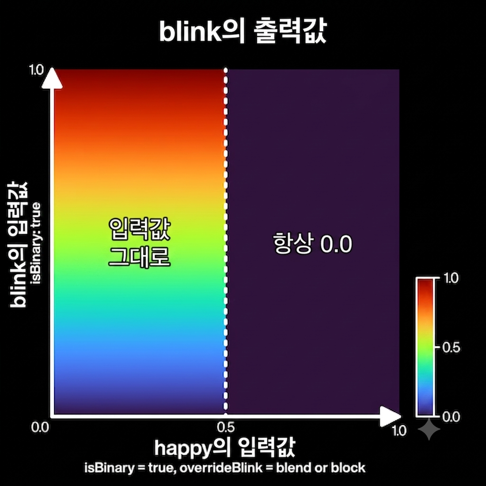

VRMC_vrm.expressions
🤖 AI 자동 번역 문서
이 문서는 AI로 자동 번역된 문서입니다. 아직 검수가 완료되지 않았으므로 오역이나 부정확한 표현이 포함될 수 있습니다.
정확한 내용은 원본 vrm-specification 문서와 비교하여 확인해 주세요.
본 문서에서는 VRMC_vrm 확장 중 expressions 필드에 대한 사양을 설명합니다.
Expression은,
- MorphTarget
- MaterialColor
- TextureTransform
그룹에 대해 의미를 지정하는 기능입니다.
예를 들어,
입을 삐죽이게 하는 MorphTarget과눈을 감는 MorphTarget의 조합을sad로 지정하는 등
Expression 사양
JSON Schema
{
"extensionsUsed": [
"VRMC_vrm"
],
"extensions": {
"VRMC_vrm": {
// VRM extension
"specVersion": "1.0",
"humanoid": {},
"meta": {},
"firstPerson": {},
/* 여기서부터 */
"expressions": {
"preset": {
"aa": { /* expression object */ },
"angry": { /* expression object */ },
"blink": {
"isBinary": false,
"morphTargetBinds": [
{
"index": 1,
"node": 2,
"weight": 1
},
{
"index": 2,
"node": 2,
"weight": 1
}
],
"overrideBlink": "none",
"overrideLookAt": "none",
"overrideMouth": "none"
},
"blinkLeft": { /* expression object */ },
"blinkRight": { /* expression object */ },
"ee": { /* expression object */ },
"happy": { /* expression object */ },
"ih": { /* expression object */ },
"lookDown": { /* expression object */ },
"lookLeft": { /* expression object */ },
"lookRight": { /* expression object */ },
"lookUp": { /* expression object */ },
"neutral": { /* expression object */ },
"oh": { /* expression object */ },
"ou": { /* expression object */ },
"relaxed": { /* expression object */ },
"sad": { /* expression object */ },
"surprised": { /* expression object */ }
}
"custom": {
"custom_name_1": { /* expression object */ },
"custom_name_2": { /* expression object */ },
},
},
"lookAt": {},
},
/* 여기까지 */
"VRMC_springBone": {},
"VRMC_node_constraint": {}
},
// glTF-2.0
"materials": [
"extensions": {
"VMRC_materials_mtoon": {}
}
],
}
expression object
VRMC_vrm.expressions.expression
| 이름 | 비고 |
|---|---|
| isBinary | 0.5보다 큰 값은 1.0, 그 이하는 0.0이 됩니다. |
| morphTargetBinds | MorphTargetBind(후술) 목록 |
| materialColorBinds | MaterialValueBind(후술) 목록 |
| textureTransformBinds | TextureTransformBind(후술) 목록 |
| overrideMouth | 이 Expression의 Weight가 0이 아닐 때, 립싱크(후술) 가중치를 조작합니다. |
| overrideBlink | 이 Expression의 Weight가 0이 아닐 때, 눈깜빡임(후술) 가중치를 조작합니다. |
| overrideLookAt | 이 Expression의 Weight가 0이 아닐 때, 시선(후술) 가중치를 조작합니다. |
Expression 제어
각 Expression이 사용될 때, 해당 표정의 강도를 나타내는 'Value' 상태를 가질 것을 가정합니다. Value는 [0-1] 범위의 값을 갖는 수치입니다. VRM의 구현은 애플리케이션이 이 범위를 벗어나는 값을 부여한 경우, 값을 클램핑(Clamp)해 주십시오.
Preset Expressions
이하는 프리셋 표정 목록입니다.
이러한 표정 정의는 expressions.preset 내에 저장됩니다.
모든 프리셋 표정은 선택적(Optional)입니다.
감정
| 이름 | 비고 |
|---|---|
| happy | 희. joy에서 변경 |
| angry | 노 |
| sad | 애. sorrow에서 변경 |
| relaxed | 락. fun에서 변경 |
| surprised | 놀람. 1.0에서 신규 추가 |
특히 구체적인 얼굴 변형에 대해 사양을 규정하고 있지 않습니다.
립싱크 절차적
절차적(Procedural): 시스템에 의해 자동으로 생성될 수 있는 값입니다.
마이크 입력을 분석하거나 텍스트에서 생성하는 등
| 이름 | 비고 |
|---|---|
| aa | 아 |
| ih | 이 |
| ou | 우 |
| ee | 에 |
| oh | 오 |
눈깜빡임 절차적
절차적(Procedural): 시스템에 의해 자동으로 생성될 수 있는 값입니다.
랜덤으로 눈을 깜빡이게 하는 등
| 이름 | 비고 |
|---|---|
| blink | 양쪽 눈꺼풀을 감음 |
| blinkLeft | 왼쪽 눈꺼풀을 감음 |
| blinkRight | 오른쪽 눈꺼풀을 감음 |
시선 절차적
절차적(Procedural): 시스템에 의해 자동으로 생성될 수 있는 값입니다.
VRM의 LookAt에 의해 주시점에 대응하는 값이 수시로 생성됩니다 (LookAt의 Expression 타입을 참조하십시오)
| 이름 | 비고 |
|---|---|
| lookUp | 본(Bone)이 아니라 Expression으로 시선이 움직이는 모델용. 시선 제어를 참조하십시오. |
| lookDown | 본이 아니라 Expression으로 시선이 움직이는 모델용. 시선 제어를 참조하십시오. |
| lookLeft | 본이 아니라 Expression으로 시선이 움직이는 모델용. 시선 제어를 참조하십시오. |
| lookRight | 본이 아니라 Expression으로 시선이 움직이는 모델용. 시선 제어를 참조하십시오. |
기타
| 이름 | 비고 |
|---|---|
| neutral | 하위 호환성을 위해 남겨두었습니다. |
Custom Expressions
위에서 언급한 Preset Expressions 외에도 사용자가 독자적으로 표정을 정의할 수 있습니다.
Custom Expressions는 expressions.custom 내에 저장됩니다.
프리셋 이름과 같은 이름의 Custom Expressions는 허용되지 않습니다.
절차적 오버라이드
립싱크, 눈깜빡임, 시선은 절차적으로 분류합니다. 절차적이란 시스템에 의해 자동으로 생성되는 것을 가정합니다. 따라서, 이러한 Expression이 다른 Expression과 동시에 활성화되어버려, 메시(Mesh)가 깨져버릴 가능성이 있습니다.
예를 들어,
- 입을 벌리는
happy와 동시에aa가 적용됨 => 입이 너무 크게 벌어져서 이상해짐 - 눈을 감는
sad와 동시에blink가 적용됨 => 눈을 두 번 감아서 눈꺼풀이 뺨을 관통함 blink와 동시에lookRight가 적용됨 => 눈이 눈꺼풀을 관통함
등입니다. 이를 방지하기 위해, 절차적이 아닌 Expression에 대해 동시에 절차적인 Expression이 활성화된 경우, 절차적인 Expression의 값을 오버라이드하는 기능이 있습니다.
happy중에는 립싱크를 하지 않게 하는 등
립싱크, 눈깜빡임, 시선에 대해 overrideMouth, overrideBlink, overrideLookAt을 설정할 수 있습니다.
각각의 override 프로퍼티는 다음 절차적 표정에 대해 작용합니다:
| 대상 | 프로퍼티 | ExpressionPreset |
|---|---|---|
| 립싱크 | overrideMouth |
aa, ih, ou, ee, oh |
| 눈깜빡임 | overrideBlink |
blink, blinkLeft, blinkRight |
| 시선 | overrideLookAt |
lookUp, lookDown, lookLeft, lookRight |
커스텀 표정에 대해 이러한 override 프로퍼티가 작용할지 여부는 사양에서 특별히 정의하지 않습니다. 애플리케이션 측의 요구에 맞게 적절히 설정해 주십시오. 예를 들어, VRM의 프리셋에 포함되지 않는 립싱크를 커스텀 표정을 사용해 애플리케이션마다 이용하고 싶을 때, 해당 커스텀 표정의 발현을 override 프로퍼티를 사용하여 제어하는 사용법이 상정됩니다.
위와 같은 이유로, VRM 구현은 커스텀 표정을 override 대상에 포함할 수 있도록 인터페이스를 제공하는 것이 권장됩니다.
blink에 대한 overrideBlink처럼 같은 종류에 대한 설정은 무효로 취급합니다.
설정 내용은 모두 같고, 효과는 다음과 같습니다.
| 이름 | 비고 |
|---|---|
| none | 아무것도 하지 않음 |
| block | 대상의 weight를 0으로 만듦. 예를 들어, happy에 overrideBlink=block이 설정되어 있을 때, happy.weight>0이 되면 blink, blinkLeft, blinkRight의 weight를 0으로 오버라이드 함. |
| blend | 대상의 weight를 감쇠시킴. 예를 들어, happy에 overrideBlink=blend가 설정되어 있을 때, blink, blinkLeft, blinkRight를 happy.weight와 블렌딩하여 감쇠시킴(후술). |
blend 세부사항
예를 들어, happy가 overrideBlink = blend로 설정된 경우, happy의 값이 0에서 1로 페이드됨에 따라 선형적으로 blink를 감쇠시킵니다. 0~1 사이의 중간값의 동작이 block과 다릅니다.
var value = 0;
if (happyWeight > 0 && happy.overrideBlink == "blend") value += happyWeight;
if (angryWeight > 0 && happy.overrideBlink == "blend") value += angryWeight;
if (sadWeight > 0 && happy.overrideBlink == "blend") value += sadWeight;
if (relaxedWeight > 0 && happy.overrideBlink == "blend") value += relaxedWeight;
if (surprisedWeight > 0 && happy.overrideBlink == "blend")
value += surprisedWeight;
var factor = 1.0 - saturate(value);
SetBlinkWeight(blinkWeight * factor);
오버라이드와 isBinary의 상호작용에 대하여
isBinary가 지정되어 있는 표정이 다른 표정에 오버라이드 영향을 미치는 경우, 출력값인 이진화된 값을 가지고 다른 표정에 영향을 미쳐야 합니다(MUST).
이는 오버라이드 영향을 미치는 표정이 캐릭터 상에 시각적으로 발현되지 않았음에도 불구하고 다른 표정이 오버라이드에 의해 억제되는 것을 방지하기 위한 사양입니다. 예를 들어, 표정
happy의isBinary가true이고overrideBlink에block또는blend가 지정된 경우,happy의 값이 0.5 이상일 때blink는 완전히 억제됩니다. 반대로happy의 값이 0.5 미만일 때blink는happy의 값과 관계없이 평가됩니다.
isBinary가 지정되어 있는 표정이 다른 표정으로부터 오버라이드 영향을 받는 경우, 받고 있는 영향이 0.0보다 크다면 완전히 억제되어야 합니다(MUST).
이는 오버라이드 영향을 받는
isBinary가true인 표정이 0 또는 1 이외의 값으로 발현되는 것을 방지하기 위한 사양입니다. 예를 들어, 표정happy의overrideBlink가block또는blend이고, 표정blink의isBinary가true인 경우,happy가 조금이라도 오버라이드 영향을 주고 있다면blink는 완전히 억제됩니다.
MorphTargetBind
extensions.VRMC_vrm.expressions[*].morphTargetBinds[*]
Expression과 MorphTarget을 연결합니다.
| 이름 | 비고 |
|---|---|
| node | 대상 node(mesh를 가지고 있음)의 index |
| index | 대상 morph의 index(모든 primitive가 동일한 morphTarget을 가질 것으로 가정합니다) |
| weight | 적용했을 때의 morph 값 [0-1]. 0.X에서는 [0-100] |
MaterialColorBind
extensions.VRMC_vrm.expressions[*].materialColorBinds[*]
Expression과 Material의 색상 변화를 연결합니다.
| 이름 | 비고 |
|---|---|
| material | 대상 material의 index |
| type | material의 변경 대상 항목 (color, uvScale, uvOffset) |
| targetValue | 적용했을 때의 material 값 (float4) |
extensions.VRMC_vrm.expressions[*].materialColorBinds[*].type
각각 다음 파라미터에 대응합니다:
| Name | pbrMetallicRoughness |
KHR_materials_unlit |
VRMC_materials_mtoon |
|---|---|---|---|
| color | pbrMetallicRoughness.baseColorFactor |
pbrMetallicRoughness.baseColorFactor |
pbrMetallicRoughness.baseColorFactor |
| emissionColor | emissiveFactor |
미사용 | emissiveFactor |
| shadeColor | 미사용 | 미사용 | extensions.VRMC_materials_mtoon.shadeColorFactor |
| matcapColor | 미사용 | 미사용 | extensions.VRMC_materials_mtoon.matcapFactor |
| rimColor | 미사용 | 미사용 | extensions.VRMC_materials_mtoon.parametricRimColorFactor |
| outlineColor | 미사용 | 미사용 | extensions.VRMC_materials_mtoon.outlineColorFactor |
targetValue는 float4로 저장되지만, 대상 파라미터에 4번째 성분이 존재하지 않는 경우 4번째 값은 무시됩니다.
TextureTransformBind
extensions.VRMC_vrm.expressions[*].textureTransformBinds[*]
Expression과 대상 Material 텍스처의 scale, offset 변화를 연결합니다. 대상 머티리얼에서 사용되는 텍스처 중 UV에 접근하는 텍스처 모두 동일한 값을 사용할 것으로 합니다.
UV에 접근하지 않는 텍스처는 MToon의 matcap입니다.
| 이름 | 비고 |
|---|---|
| material | 대상 material의 index |
| scale | 적용했을 때의 scale 값 (float2, default=[1, 1]) |
| offset | 적용했을 때의 offset 값 (float2) |
Expression 업데이트 알고리즘
MorphTarget
- 모든 MorphTarget이 0인 상태로 만든다.
- Expression 값(Weight)을 누적한다.
void AccumulateValue(Expression expression, float value) - 누적된 값을 적용한다.
MaterialColor
- 모든 MaterialColor를 초기 상태로 만든다 (0이 아니라)
- Expression 값(Weight)을 누적한다.
void AccumulateValue(Expression expression, float value) - 누적된 값을 적용한다.
Base + (A.Target - Base) * A.Weight + (B.Target - Base) * B.Weight - MaterialColor는 초기값이 0이라는 보장이 없으므로, 초기값과의 차이를 누적합니다.
TextureTransform
- 모든 MaterialColor를 초기 상태로 만든다 (0이 아니라) -> TextureTransform의 오기이므로 TextureTransform을 초기 상태로 만듦
- Expression 값(Weight)을 누적한다.
void AccumulateValue(Expression expression, float value) - 누적된 값을 적용한다.
TODO: 적용에 대해 구체적인 알고리즘을 검토 중입니다.